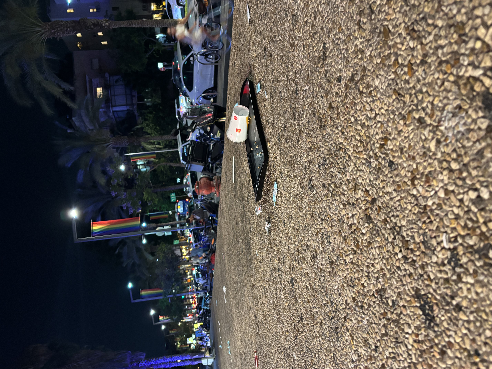
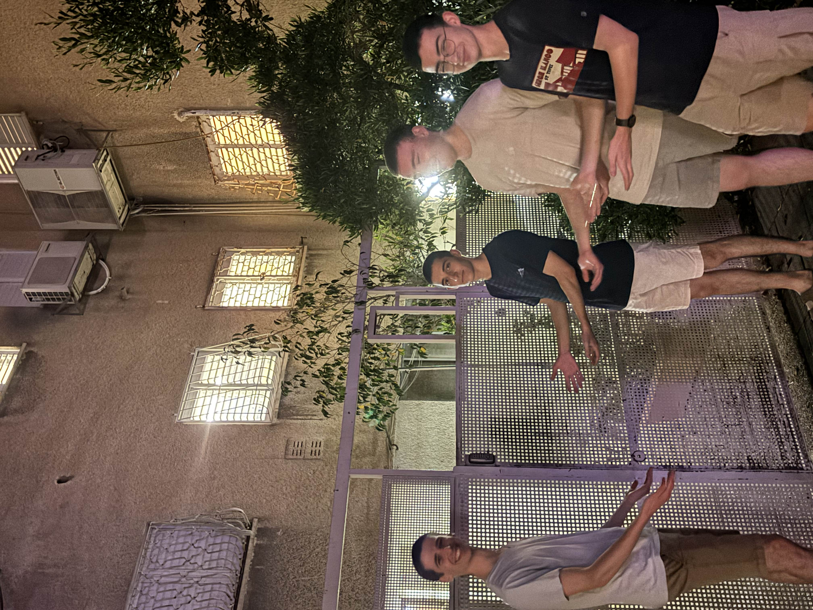
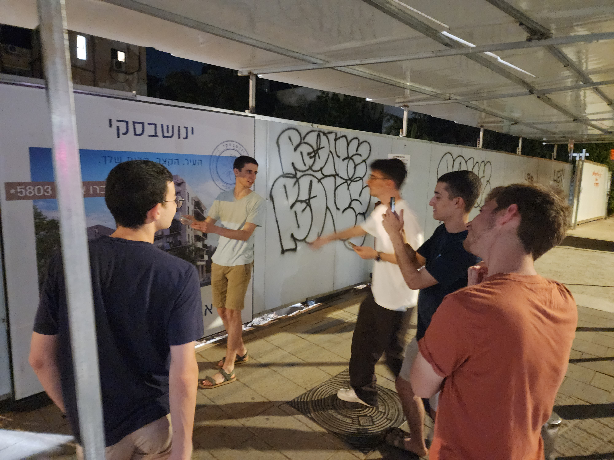
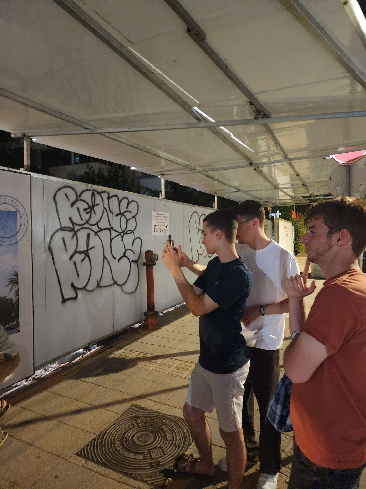
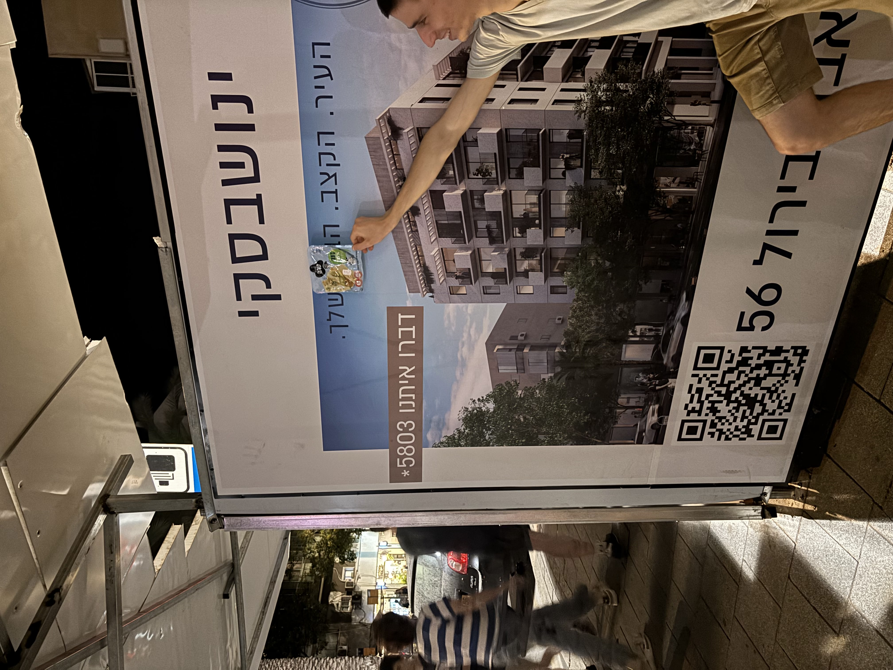

שבעים הפעם באמת, יצאנו מהמסעדה ונתקלנו במפגן מחאתי במרכז הרחוב.

הפגנה זועמת במיוחד
יצאנו למסע שורשים ברחבי אבן גבירול, על מנת למצוא אתרים עתיקים של חבורת הנחפמים הפנומנלית.
התחלנו בחיפושים אחר המקום בו צולמה התמונה הנצחית הידועה בשמה "לשחרר את מייסון".
באמצעות כישורי איתור מרשימים ואינטואיציה של חברי הנחפמים המופלאים, איתרנו את האתר הלא נכון.

מביך...
חיש מהר, חברי חבורת הנחפמים המונומנטלית התעשתו על עצמם, והובילו אותנו הפעם לנקודת הציון הנכונה. נדהמנו לגלות שמייסון עדיין לא שוחרר.
גררו את הווילון על מנת להשוות בין התיעודים
כעת יצאנו בחיפוש אחר נקודת ציון אייקונית, המקום בו צולמה התמונה הידועה בתור "התמונה עם הגבינה הצהובה".
הסתובבנו ברחבי אבן גבירול בניסיון למצוא את המקום. הלכנו הלוך ושוב ללא כל הצלחה ואף ניסינו להפעיל יכולות גאו-לוקציה מתקדמות, אך שוב מאמצנו לא נשאו פרי. לירון היה משוכנע כי התמונה צולמה במעבר רחוב מסויים, אך אתר הבנייה שהיה שם אמר אחרת.
לאחר כמה מאמצים נוספים, הצלחנו לאכן את המיקום והזווית המדוייקים מהם צולמה התמונה, ובאמצעות חזרה בזמן, אימתנו את הטענה של לירון שאתר הבנייה היה בעברו הבניין המדובר.
בכל מקרה, עשינו כמיטב יכולתנו כדי לשחזר את התמונה.
לצורך המשימה, שחר בחר לדפוק את הברך שלו בחוזקה בעמוד הסמוך. שאר החבורה לא לגמרי הבינה איך זה תורם למטרה, אך העריכה את ההקרבה שהוא הפגין.
כעת בחרנו את המיקום האידאלי לגבינה הצהובה, ועבדנו על הרכבת הקומפוזציה המיטבית.

שלב מיקום הגבינה

שלב הקומפוזיציה

תוצר סופי
מרוצים מההישגים, ועייפים מהמסע, החבורה נפרדה וכל איש המשיך לדרכו.